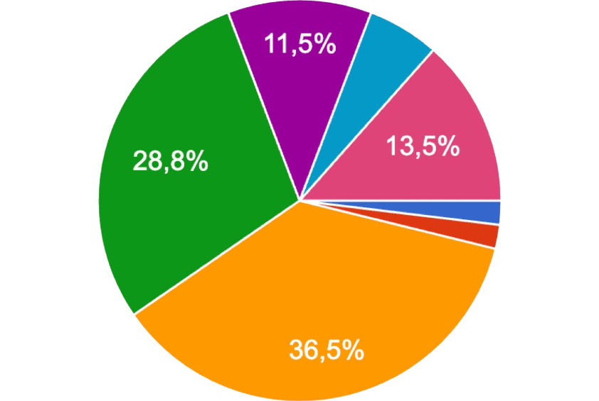
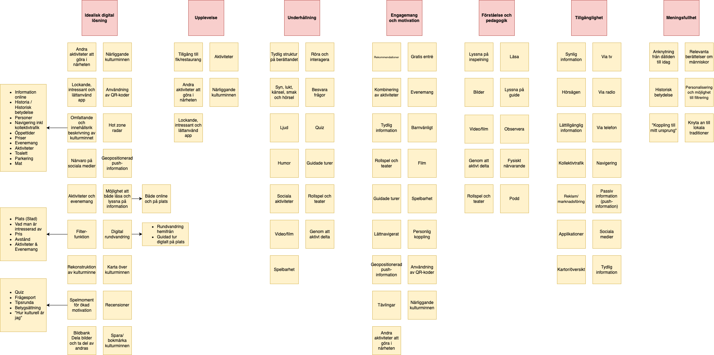
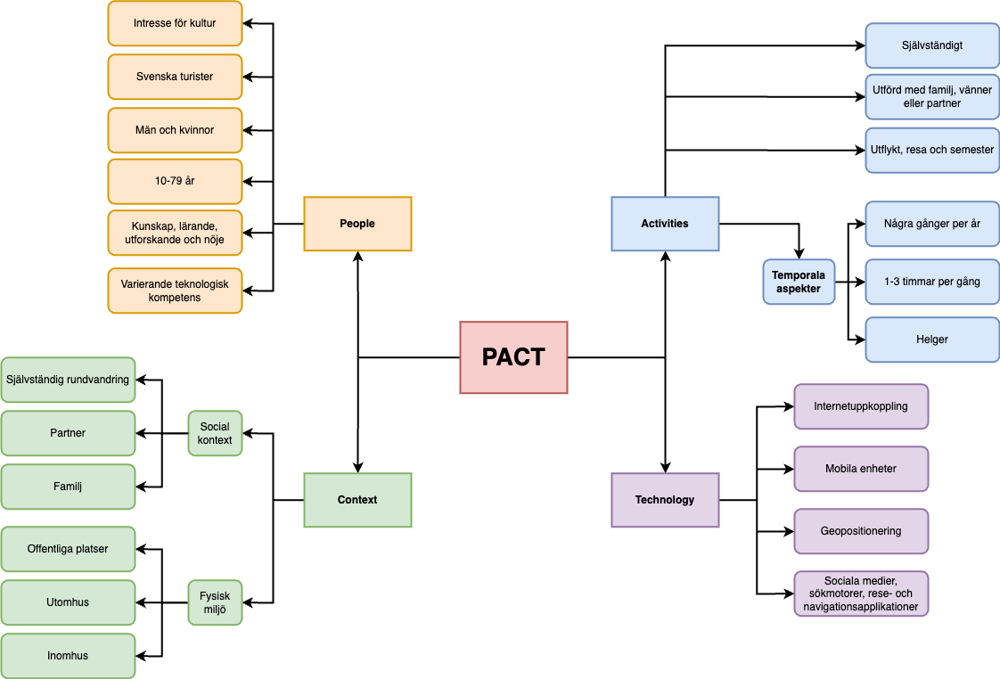
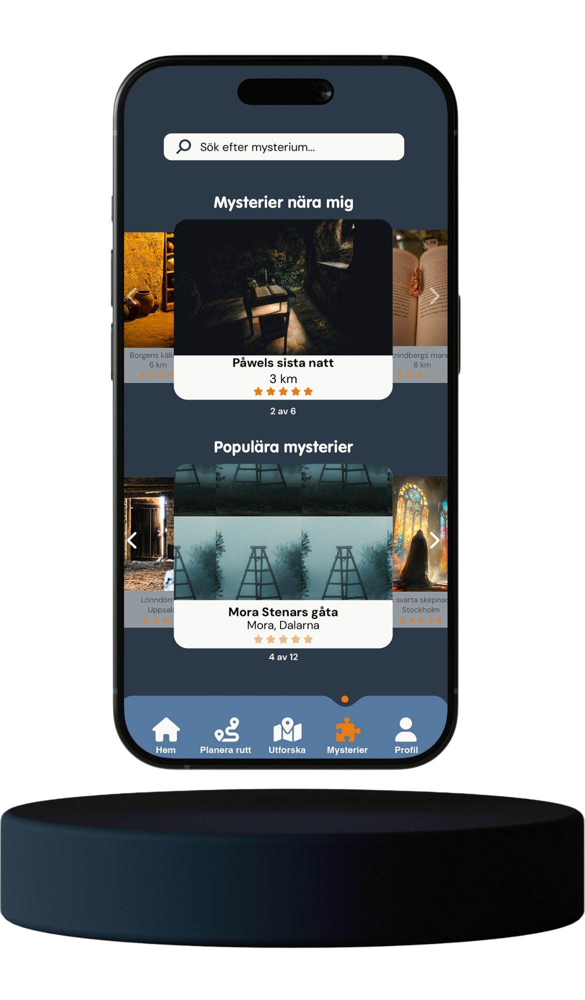
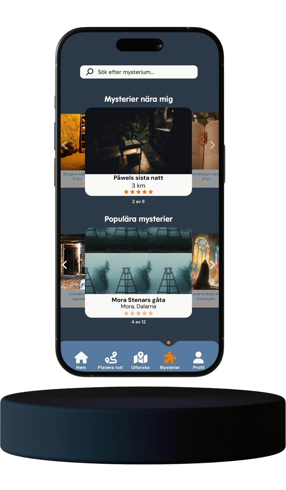

Kulturkompassen
Explore Sweden’s Cultural Heritage with a Touch of Gamification
This app invites users to discover Sweden’s cultural heritage through a mix of engaging features. While the focus is on exploring historical landmarks, the app also includes gamified elements, such as interactive challenges and rewarding activities, to enhance the experience. Users can easily find cultural heritage sites nearby, plan routes, and visit places along the way, making discovery both convenient and inspiring.

Introduction
This project was developed collaboratively by a team of three, aiming to create a digital application that fosters increased engagement with cultural heritage sites in Sweden. The application is designed to not only encourage visits to these sites but also to enhance users’ learning experiences and deepen their understanding of cultural history. Key features of the application include the ability to explore cultural heritage sites nearby, plan longer routes to discover multiple locations, and engage in interactive activities. Users can solve mysteries related to historical events and compete against others, making the exploration process both educational and entertaining. By combining practical tools for trip planning with gamified elements, the application seeks to motivate users of all ages to engage actively with Sweden’s rich cultural heritage while fostering a sense of curiosity and community.
My Role
In this project, I focused on understanding and addressing user needs. Through research and testing, I identified gaps in current solutions for visiting cultural heritage sites, explored what engages users, and gathered insights into desired features. I contributed to ideation, concept development, and prototyping, using prototypes as tools to test and refine ideas. By integrating the user perspective and aligning design decisions with both user and client goals, I ensured the application was engaging, educational, and user-focused.
Challange
A key challenge was designing an application that catered to the diverse needs of users, from casual visitors to heritage enthusiasts. Identifying barriers such as lack of awareness and limited engagement opportunities required thorough research and careful consideration. Another challenge was balancing gamified features like mysteries and competitions with the authenticity and educational value of the cultural heritage experience. Ensuring these elements enhanced rather than detracted from the core purpose demanded iterative testing and refinement.
Design process
Key Steps in the Divergent and Convergent Stages of the Design Process
Research and Data
Surveys and interviews were conducted to gain a comprehensive understanding of the current practices and challenges associated with visiting cultural heritage sites. This research sought to explore how individuals currently engage with cultural landmarks, including their behaviors, preferences, and motivations. A key focus was to identify the needs and expectations of visitors, such as what they require to plan and enjoy visits, and the features that could enhance their overall experience.
An affinity diagram was developed to organize and analyze the results from surveys and interviews, providing a structured overview of what an ideal solution should include based on user needs and preferences. The diagram helped identify key features desired by users, focusing on elements that create a meaningful and engaging experience. It highlighted aspects such as enhancing entertainment, fostering engagement and motivation, improving accessibility, and providing educational and pedagogical value.
A comprehensive needs analysis was conducted to identify and understand the primary, secondary, and tertiary needs of the target audience. This step was essential to gain insights into the varying priorities and expectations of users, ensuring that the design solution would address both fundamental and nuanced requirements effectively. To deepen the understanding of the target audience, detailed personas were developed. These personas captured key user archetypes, outlining their goals, behaviors, strengths, and weaknesses. This process not only humanized the data but also allowed for a more empathetic approach to design.
Explorations
Sketches were created to explore and test different concepts through user testing. These sketches allowed for a quick visualization of several ideas and solutions, making it possible to compare and evaluate them. By testing various concepts, we were able to identify which elements were effective and which ones did not meet expectations. This process also provided us with new insights and ideas that we might not have considered otherwise. The feedback from user testing played a crucial role in improving the design, adjusting functionality, and ensuring that the solution best met the needs and expectations of the users. This iterative approach helped refine the design and create a solution that was both user-friendly and functional.
Digital prototypes were created using Adobe XD to explore and test different concepts, focusing on functionality rather than visual design. These simple prototypes allowed us to validate core features and interactions early in the process. Through user testing, we gathered valuable feedback, uncovering new insights and ideas. This iterative process helped refine the prototypes, adjust features, and explore alternative solutions based on user input. The insights gained were crucial for optimizing the design and ensuring the final product met user needs, prioritizing usability and functionality before finalizing the visual elements.
A graphic identity and profile were developed for the application, incorporating various design elements such as typography, color palette, and layout to create a cohesive visual language. Different font styles and color schemes were tested to establish a balanced, modern aesthetic that was both engaging and professional. The goal was to create a playful and entertaining look that remained clean, calm, and contemporary. The chosen typography emphasized readability while maintaining a sense of style, and the color palette was designed to evoke a sense of warmth and approachability, while ensuring clarity and usability. Through testing and iteration, we refined the visual identity to ensure it aligned with the app’s mission, providing an inviting and functional experience for users.
The digital prototypes were iterated and evolved into a more polished concept, blending visual design, layout, features, and purpose. Through testing, we ensured the prototypes effectively met user needs and fulfilled their intended goals. This process helped identify strengths and areas for improvement, guiding further refinement to enhance functionality and user experience. Each iteration brought valuable insights, allowing us to fine-tune the design and functionality to create a more seamless and engaging experience for users.
Validation
A graphic identity and profile were developed for the application, incorporating various design elements such as typography, color palette, and layout to create a cohesive visual language. Different font styles and color schemes were tested to establish a balanced, modern aesthetic that was both engaging and professional. The goal was to create a playful and entertaining look that remained clean, calm, and contemporary. The chosen typography emphasized readability while maintaining a sense of style, and the color palette was designed to evoke a sense of warmth and approachability, while ensuring clarity and usability. Through testing and iteration, we refined the visual identity to ensure it aligned with the app’s mission, providing an inviting and functional experience for users.
Solution
A graphic identity and profile were developed for the application, incorporating various design elements such as typography, color palette, and layout to create a cohesive visual language. Different font styles and color schemes were tested to establish a balanced, modern aesthetic that was both engaging and professional. The goal was to create a playful and entertaining look that remained clean, calm, and contemporary. The chosen typography emphasized readability while maintaining a sense of style, and the color palette was designed to evoke a sense of warmth and approachability, while ensuring clarity and usability. Through testing and iteration, we refined the visual identity to ensure it aligned with the app’s mission, providing an inviting and functional experience for users.
 
